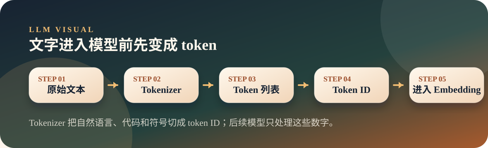
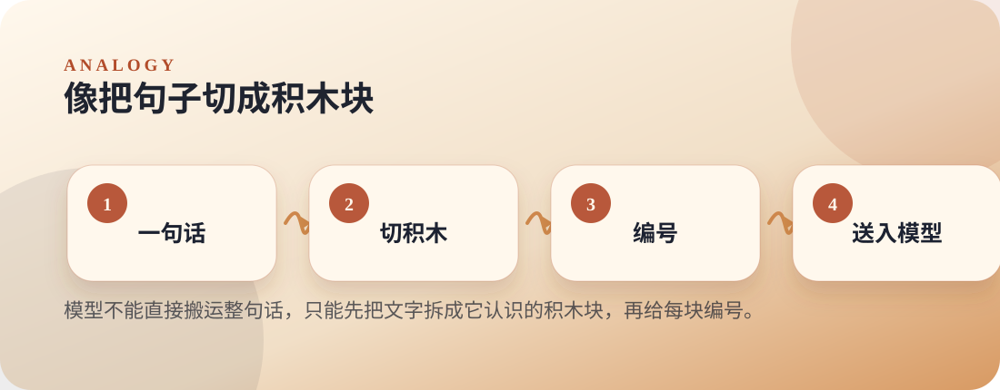

从零开始理解大模型
02. Token：大模型眼中的“字”长什么样
模型不直接读取中文、英文或代码，而是先把文本切成 token，再把 token ID 送入模型。
TokenBPETokenizer
Thesis
文章主旨
模型不直接读取中文、英文或代码，而是先把文本切成 token，再把 token ID 送入模型。
同一句话，在人眼里是自然语言；在模型眼里，是一串数字 ID。为什么中文、代码、URL 更容易吃掉上下文？答案往往从分词开始。
Visual
两张图看懂
第一张图讲机制怎么流动，第二张图把抽象概念落到生活直觉。


Analogy
原文比喻
人类语言和模型之间的翻译层
文章把 Token 说成“人类语言和模型之间的翻译层”：人类写字，模型读 token；分词器先把文本翻译成模型能处理的 token ID。
对应到机制：Tokenizer 把自然语言、代码和符号切成 token ID；后续模型只处理这些数字。
Explain
概念拆解
按下面三步讲，会比直接抛术语更顺：先建立直觉，再解释机制，最后落到本页结论。
Step 01
先看入口
模型真正接收的不是文字，而是一串 token ID；这一步决定后面所有计算的输入形状。
Step 02
再看切法
常见片段可能是一整块，不常见片段会拆得更碎，所以字符数和 token 数并不等价。
Step 03
最后看成本
Token 数会直接影响上下文窗口、推理成本和计费，也是理解长文本的入口。
本页要带走的三句话
- Token 是模型真正处理的基本单位。
- BPE 的核心是不断合并高频相邻片段。
- Token 数影响上下文长度、费用和推理开销。
Small Check
可选小实验
用一条混合文本观察：文字进入模型前会先变成 token ID。 实验只用于观察现象，不作为本页主线。
可选实验命令
python3 llm/02-token/tokenizer_demo.py "Kubernetes 你好 world"tokenizer_demo.py会展示文本被切成哪些 token，以及对应的 token ID。- 中文、英文和符号可能被切成不同粒度的片段。
- Token 数会影响上下文长度、费用和后续计算量。
Extend
继续阅读
教学页以讲清文章为主；完整原文与配套脚本保留在仓库中，方便分享后继续查阅。